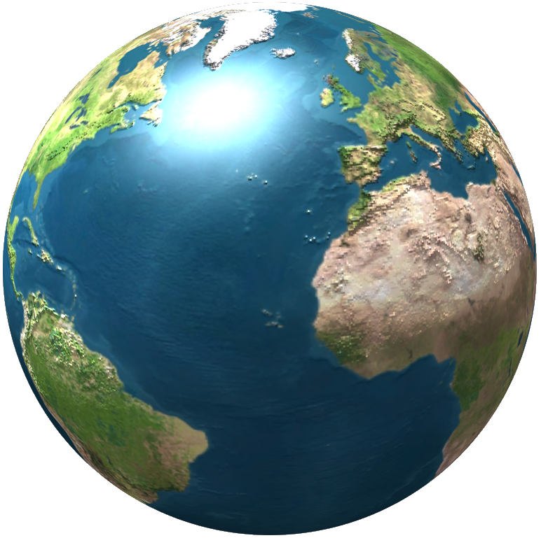

 Hidrosfera (din limba greacă: hidros = apă și sphaira = sferă) descrie, în geografia fizică, masa totală de apă liberă în stare lichidă sau solidă de pe suprafața Pământului, precum și de dedesubtul sau de deasupra acestei suprafețe.
Hidrosfera este partea biosferei care conține apa de pe planeta noastră. Include apa în toate stările sale și atât apele de suprafață, cât și cele subterane. Gheața care se acumulează pe calotele polare, în lanțurile muntoase și toată apa care circulă atât în atmosferă, cât și în râuri, lacuri și mări fac, de asemenea, parte din hidrosferă.
În timpul formării materialelor terestre, apa a fost sub formă lichidă și în gaz. Apa care era pe planeta noastră,
la începutul tuturor, era doar abur. Acest lucru se datorează temperaturilor ridicate care au domnit planeta
noastră, fiind atât de fierbinți. Mingea aceea de foc incandescent care era Pământul la începutul tuturor a făcut ca
apa să nu poată fi într-o altă stare mai mult decât în abur.
Mai târziu, când planeta noastră a început să se răcească, a putut fi transformată într-o stare lichidă, dând
naștere la mările și oceanele din întreaga lume. De asemenea, a înghețat, formând ghețari și calote polare. O parte
din acea apă a rămas în atmosferă ca vapori de apă și a dat naștere la formarea norilor.
Așa s-au format primele zăcăminte de apă. Cu toate acestea, știm că apa nu a rămas constantă de-a lungul istoriei
pământului. Pe de o parte, fiind în continuă circulație și transformare, putem spune că se află în ciclu de apă.
Datorită diferitelor schimbări care au avut loc în climă de-a lungul anilor, proporțiile de gheață, apă lichidă și
abur au fost, de asemenea, modificate. Acest lucru a dus la schimbarea caracteristicilor terenului de-a lungul
anilor.
Circuitul apei in natura > este procesul de circulație continuă a apei în cadrul hidrosferei Pământului. Acest proces este pus în mișcare de radiația solară și de gravitație. Datorită ciclului apei pe Pământ, există viață, se formează apele terestre, clima, vremea și solul. În plus, ciclul apei leagă toate învelișurile Pământului, susținând funcționarea acestora. Din uriașa cantitate de apă existentă în natură și care circulă în continuu, în prezent, folosințelor umane le sunt accesibile numai apele dulci de suprafaţă, precum și apele subterane, până la o adâncime de circa 800 m. Așa numitele mări subterane, de exemplu, Sahara, permit, deobicei, numai un consum foarte redus de apă, deoarece sunt fosile.
In natura, apa formeaza un invelis continuu - hidrosfera, compusa din ape curgatoare, lacuri, ape subterane, mlastini, ghetari, nari si oceane, legare intre ele. Existenta tuturor acestorunitati acvatice demonstreaza varietatea formelor hidrosferei in spatiu. Cea mai mare parte din apa hidrosferei se afla in Oceanul Planetar (97,1%). Urmeaza apoi apa din ghetari(1,7%), cea subterana(1,2%) si mai apoi apa din celelalte coomponente ale hidrosferei.
Principalele proprietati fizico-chimice ale apelor marine sunt :
- temperatura;
- salinitatea;
- densitatea;
- transparenta si culoarea;
- gheturile marine.
Temperatura apei oceanice rezultă, în principal, din procesul de încălzire determinat de
radiaţia
solară directă.
Temperaturile joase la adâncimi mai mari de 2000 m sunt condiţionate de influenţa apelor
polare. În regiunile polare apa, răcindu-se până la -1°C şi chiar -2°C, coboară şi se îndreaptă de la poli spre
Ecuator. Apele calde se deplasează de la Ecuator spre latitudini mari.
Prin aceasta se explică faptul că temperatura apelor la fundul şi suprafaţa Oceanului este diferită.
Salinitatea. Salinitatea media a Oceanului Planetar este de 35%.In mari ea este mai ridicata, de
exemplu in Marea Rosie, salinitatea este de 42%.La suprafata
oceanelor, salinitatea se schimba zonal. La ecuator, atinge valorile de 34,5-35,5%, la tropice, de 36-37%.In
regiunile temperate si noedice salinitatea scade pana la 32%.
Densitatea. Densitatea apei creste de la Ecuator spre regiunile polare, atingand cota maxima inarla
in partea de nord a Oceanului Atlantic (1,0275 g/cm3)
Presiunea. La o adâncime de 10 m, presează cu o forță de 10N pe 1 cm 2 dintr-un corp scufundat, la o
adâncime de 100 m - 0,1 kN, 1.000 m - 1 kN etc.Se poate presupune că presiunea monstruoasă a apei în adâncurile
oceanului va condensa apa, astfel încât navele și
alte obiecte grele vor atârna în ea și nu se vor scufunda. Dar apa, ca toate lichidele, se pretează puțin la
compresie. Dacă comprimați apa până la o astfel de densitate încât să plutească în ea, ar fi necesar să o compactați
de 8 ori. Între timp, pentru compactare doar la jumătate,
adică reducerea volumului la jumătate, este necesară o presiune de 1100 MPa.
![imagine cu discul sechi](
CAD7wvGXhAB14ExsICodmhGwgAy8WIYoklADHRscIDCEUxIAEURIQAUxIRDABc0S8bFgIIExDCACgwJiQgIWBiQjAdeJeJARgOvEvGxYALCJCAH//Z) Transparenta apelor marine. Transparenta apei de
mare variaza in functie de limpezimea ei, de gradul de dispresie si de
absorptie al razelor de lumina.
Transparenta maxima a fost constatata in Marea Sargaselor (66,5m). Transparenta apei in mari si oceane se masoara cu
ajutorul discului Secchi.
Transparenta apelor marine. Transparenta apei de
mare variaza in functie de limpezimea ei, de gradul de dispresie si de
absorptie al razelor de lumina.
Transparenta maxima a fost constatata in Marea Sargaselor (66,5m). Transparenta apei in mari si oceane se masoara cu
ajutorul discului Secchi.
Valurile eoliene produse de furtuni sunt periculoase pentru navigatie si au un
impact insemnat asupra coastelor. In unele situatii este realizat un spectru de interactiune in care se combina
energia mai multor valuri, cu inaltimi de 8 – 10 m, a caror rezultanta este deosebit de periculoasa pentru
ambarcatiuni si pentru platformele petroliere marine (de exemplu cele din Marea Nordului).
Ele reprezinta un pericol pentru navigatia maritima.Din cauza valurilor uriase, multe nave naufragiaza. La
apropierea de tarm, valurile eoliene pot produce calimitati.
Valurile tsunami produse de furtuni sunt periculoase pentru navigatie si au un impact
insemnat asupra coastelor. In
 unele situatii este realizat un spectru de
interactiune in care se combina energia mai multor valuri, cu inaltimi de 8 – 10 m, a caror rezultanta este deosebit
de periculoasa pentru ambarcatiuni si pentru platformele petroliere marine (de exemplu cele din Marea Nordului).
Un tsunami nu constă dintr-o singură undă, este o serie de unde succesive separate una de alta de o lungime de undă
definită. Aceste valuri ajung la țărm în perioade de timp care pot varia de la doar câteva minute la câteva ore.
unele situatii este realizat un spectru de
interactiune in care se combina energia mai multor valuri, cu inaltimi de 8 – 10 m, a caror rezultanta este deosebit
de periculoasa pentru ambarcatiuni si pentru platformele petroliere marine (de exemplu cele din Marea Nordului).
Un tsunami nu constă dintr-o singură undă, este o serie de unde succesive separate una de alta de o lungime de undă
definită. Aceste valuri ajung la țărm în perioade de timp care pot varia de la doar câteva minute la câteva ore.
Aisbergurile. Termenul aisberg, iceberg sau ghețar plutitor (posibil din neerlandeză:
ijsberg, sau din germană:  Eisberg) desemnează un bloc mare de gheață
desprins din una din calotele polare glaciale ale Terrei, care navighează spre zonele calde ale globului influențând
clima zonelor învecinate și stingherind navigația maritimă.
Iceberg este un bloc de gheață care se poate forma în apropierea coastei Antarcticii. Din acest loc începe călătoria
lor până la a 40-a latitudine a oceanelor Pacificului, Atlanticului și Indiei. Aceste zone nu sunt atât de
solicitate în rândul operatorilor de transport maritim, deoarece principalele lor rute merg prin panama și Canalele
Suez.
Eisberg) desemnează un bloc mare de gheață
desprins din una din calotele polare glaciale ale Terrei, care navighează spre zonele calde ale globului influențând
clima zonelor învecinate și stingherind navigația maritimă.
Iceberg este un bloc de gheață care se poate forma în apropierea coastei Antarcticii. Din acest loc începe călătoria
lor până la a 40-a latitudine a oceanelor Pacificului, Atlanticului și Indiei. Aceste zone nu sunt atât de
solicitate în rândul operatorilor de transport maritim, deoarece principalele lor rute merg prin panama și Canalele
Suez.
 Inundatiile. Inundatiile reprezinta
cel mai raspandit hazard de oe Terra, cu numeroase pierderi de vieti omenesti si cu pagube materiale si de
proportii. Cauza inundațiilor este revărsarea peste maluri a apelor curgătoare sau a lacurilor. Inundațiile pot avea
loc în timpul viiturilor, în urma ploilor torențiale, topirii bruște a zăpezilor etc. Uneori, inundațiile au loc la
gura râurilor de câmpie, în urma acțiunii vânturilor care bat dinspre mare, a cutremurelor de pământ submarine etc.
Pentru prevenirea inundațiilor se construiesc diguri, baraje ș.a. Inundațiile (numite irigații) pot fi provocate și
în mod voit pentru a iriga terenurile agricole. Tot intenționat se provoacă inundații în amonte de baraje,
pentru a construi lacuri de acumulare.
Inundatiile. Inundatiile reprezinta
cel mai raspandit hazard de oe Terra, cu numeroase pierderi de vieti omenesti si cu pagube materiale si de
proportii. Cauza inundațiilor este revărsarea peste maluri a apelor curgătoare sau a lacurilor. Inundațiile pot avea
loc în timpul viiturilor, în urma ploilor torențiale, topirii bruște a zăpezilor etc. Uneori, inundațiile au loc la
gura râurilor de câmpie, în urma acțiunii vânturilor care bat dinspre mare, a cutremurelor de pământ submarine etc.
Pentru prevenirea inundațiilor se construiesc diguri, baraje ș.a. Inundațiile (numite irigații) pot fi provocate și
în mod voit pentru a iriga terenurile agricole. Tot intenționat se provoacă inundații în amonte de baraje,
pentru a construi lacuri de acumulare.
Hidrosfera are un rol important, deoarece apa este un element principal pentru mentinerea vietii. Viata a aparut initial in apa. Ea a influentat in cel mai inalt grad lumea plantelor si animalelor. Pamantul, ca planeta, prezinta mai multe straturi care, fie, intra in constitutia lui, fie il inconjoara. Pe baza principiului gravitatiei universale, globul pamantesc, alcatuit din barisfera, litosfera si hidrosfera, este inconjurat de un invelis gazos care se numeste atmosfera, si invelisul biotic- biosfera diversele lor procese desfasurandu-se intr-o stransa interdependenta. Toate aceste invelisuri se influenteaza reciproc; apa este prezenta in aer, in pamant si in corpul vietuitoarelor. Hidrosfera, a carei geneza nu este pe deplin lamurita, are o mare insemnatate atat in proportii (7/10 din suprafata totala a globului), incluzand oceanele si marile , lacurile si fluviile, apele subterane etc., cat si prin faptul ca vietuitoarele s-au dezvoltat prioritar in oceanul planetar ce detine si astazi cea mai mare amploare de pe Terra. Este importanta si datorita faptului ca este un mare generator de oxigen atmosferic ( numai fitoplanctonul oceanic- adica totalitatea organismelor vegetale unicelulare care plutesc in masa apei - emana anual in atmosfera circa 363 milioane de tone de oxigen ); este cel mai mare absorbant si emitator de caldura, precum si principala veriga in circuitul apei in natura, iar prin apele continentale, principala sursa de apa potabila.